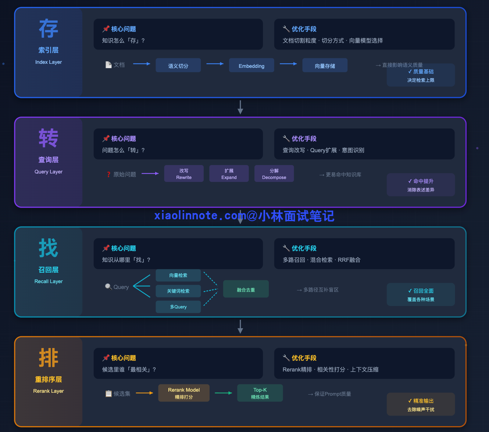
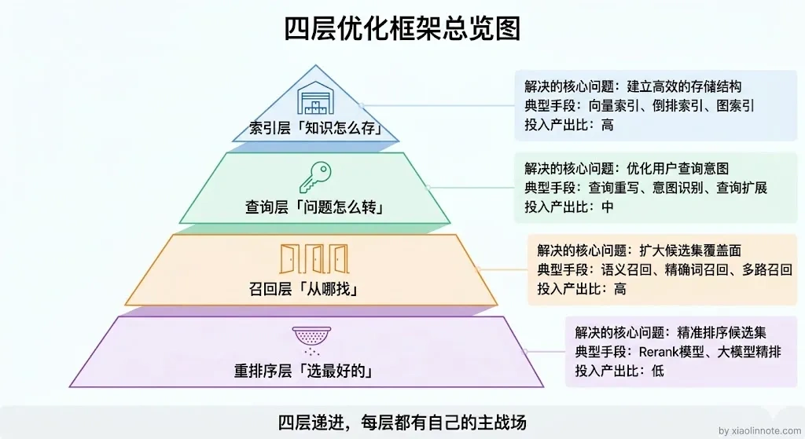
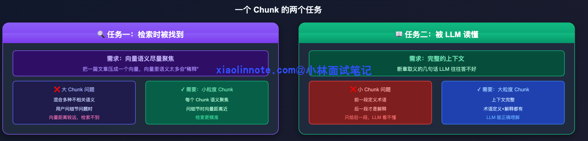
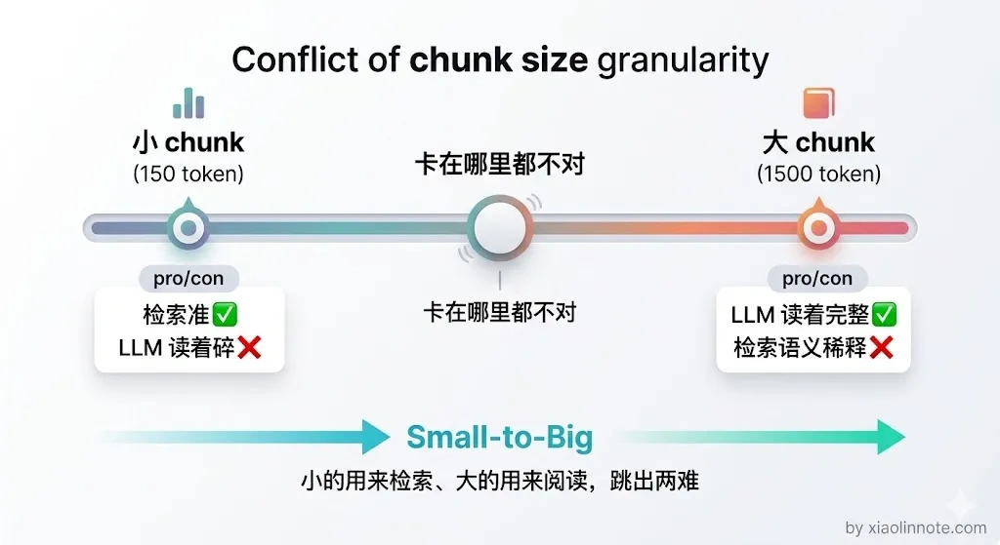
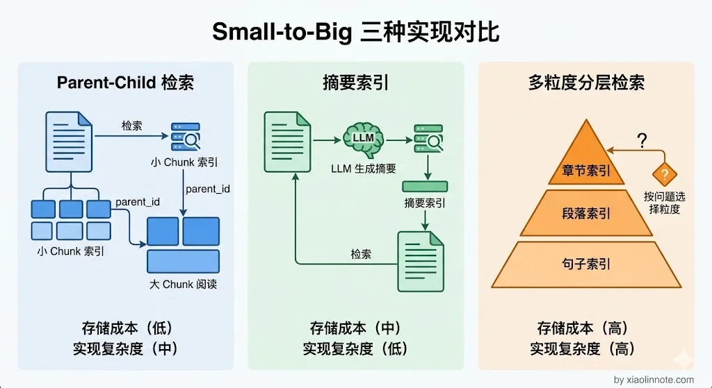
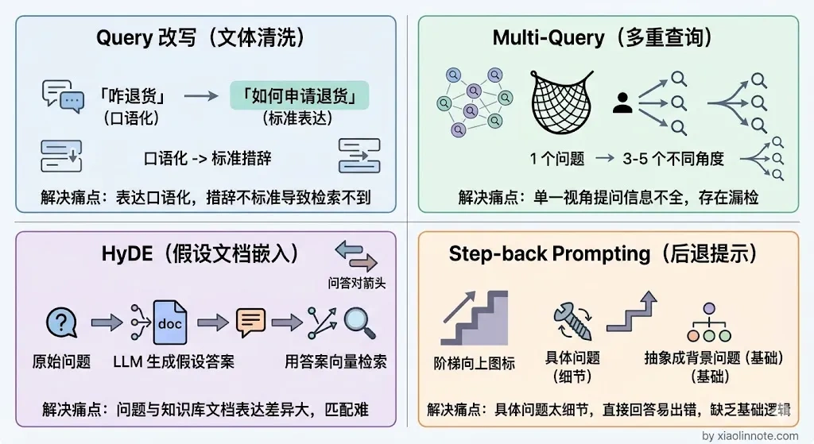
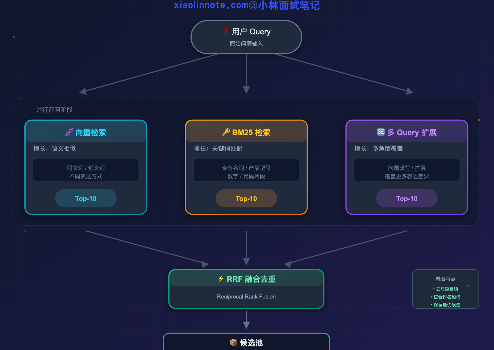
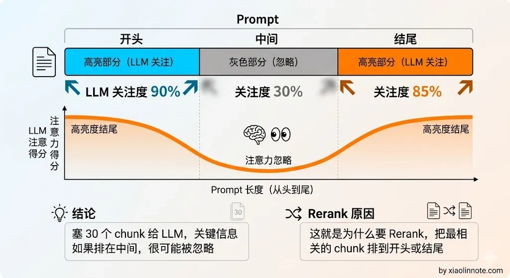
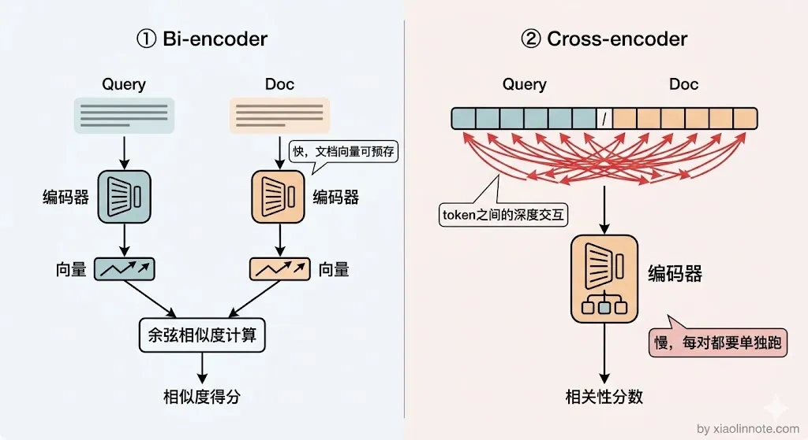
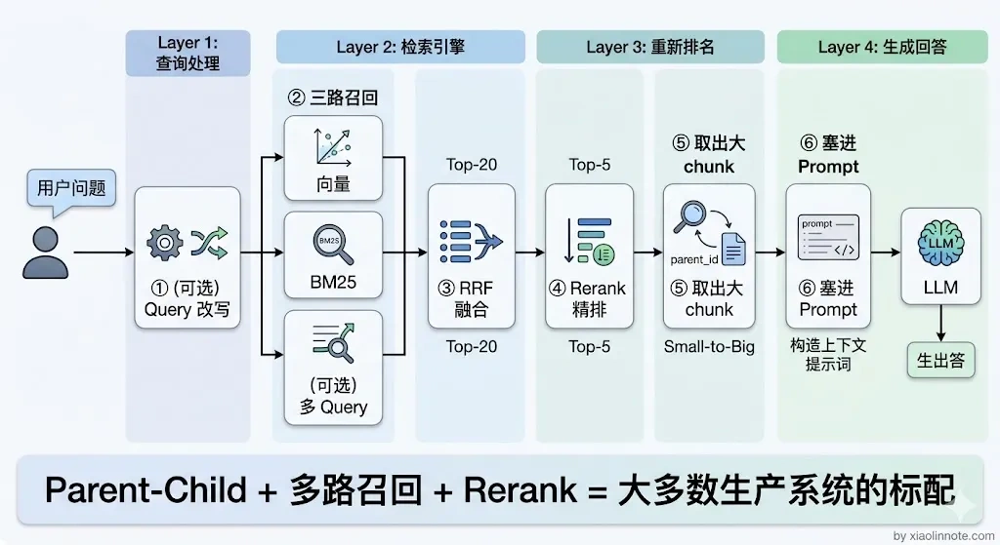

14. RAG 检索优化策略有哪些？
👔面试官：RAG 系统的检索效果不好，你会从哪些方面优化？
🙋♂️我：检索效果不好嘛，那就换个好一点的 Embedding 模型，或者把 chunk 大小调一调，一般调调参数就能好很多。
👔面试官：光调参数就能解决所有问题？如果用户提问方式本身就有问题，你怎么优化？如果检索召回了 30 个 chunk，全部塞给 LLM 也不行，你怎么办？
🙋♂️我：那我可以做个 Rerank 精排，把最相关的几个挑出来给 LLM……
👔面试官：Rerank 是不错，但你说的这些都是零散的手段，你有没有一个系统性的优化框架？索引层、查询层、召回层、重排序层，每一层解决什么问题你能讲清楚吗？
这个问题需要一个系统性的视角来回答，让我梳理一下完整的优化框架。
💡 简要回答
我理解 RAG 的检索优化可以从四个层次来看：索引层决定知识怎么存，查询层决定问题怎么转换，召回层决定从哪些路径去找，重排序层决定最终哪些内容进入 prompt。
每一层都有对应的优化手段，我的经验是单独优化一个层次往往效果有限，线上系统我会组合来用，先靠索引优化和多路召回来保证覆盖率，再用 Rerank 保证精度，如果用户提问质量比较差，再额外加上查询优化。
📝 详细解析
检索是 RAG 的命脉
要理解为什么检索优化这么重要，先想清楚一件事：LLM 只能根据送进去的 context 来回答，检索召回的内容就是整个系统的天花板。
生成层做得再好，如果检索没把相关内容找回来，LLM 也是巧妇难为无米之炊。反过来，只要检索能稳定地召回准确、相关的 chunk，生成质量自然差不到哪里去。
你可能会问，那优化生成层没用吗？当然有用，但投入产出比完全不同。生成层的优化（比如调 prompt、换模型）是锦上添花，而检索层的优化是从根本上提升系统的能力上限。所以在 RAG 系统里，检索优化是投入产出比最高的环节，没有之一。
四层优化全貌
RAG 检索优化可以从四个层次来理解，每一层解决的问题不同，优化手段也不同：

- 索引层决定知识怎么「存」，也就是文档切割的粒度和方式，直接影响向量的语义质量；
- 查询层决定问题怎么「转」，在检索之前对用户的 query 做加工，让它更容易命中知识库；
- 召回层决定知识从哪里「找」，用多条不同的检索路径并行捞取候选，互补各自的盲区；
- 重排序层决定候选里谁「最相关」，对粗召的候选集做精排，保证进入 prompt 的都是真正有用的内容。
这四层是递进关系，可以用一个比喻来理解：索引层决定「仓库里放了什么」，查询层决定「用什么钥匙开门」，召回层决定「从哪几扇门进去找」，重排序层决定「把找到的东西里最好的几件带出来」。下面依次展开说。

第一层：索引优化
先从最底层的索引说起，因为索引是所有后续优化的基础，如果知识存的方式就有问题，后面再怎么优化查询和检索都是白搭。
索引优化是 Chunking 策略的延伸，但它聚焦于一个更核心的矛盾：检索用的粒度和 LLM 读的粒度天然是矛盾的。
理解这个矛盾，要从 chunk 承担的两个角色说起。一个 chunk 需要同时完成两个任务。

第一个任务是「检索时被找到」，这要求向量语义尽量聚焦。把一篇文章压成一个向量，这个向量里混合了太多不相关的语义，用户问细节问题时，这个笼统的向量很可能和问题向量距离较远，就检索不到了，所以检索需要小粒度的 chunk，每个 chunk 语义聚焦。
第二个任务是「被 LLM 读懂」，这要求有完整的上下文。断章取义的几句话 LLM 往往答不好，如果文档里前一段定义了术语、后一段才是真正的解释，只给 LLM 后一段它可能看不明白，所以 LLM 需要大粒度的 chunk，上下文完整。
很多人以为直接把 chunk 切小就好了，检索会变准，但切小之后 LLM 拿到的是碎片化的信息，回答质量反而下降。这就是两难困境：小 chunk 检索准但内容太碎，大 chunk 内容完整但检索时语义稀释。

解决这个矛盾的核心思路叫 Small-to-Big，也就是小块检索、大块使用。具体有三种实现方式：

Parent-Child Chunking 是最直接的方案。把文档切成两个版本：一份是细粒度的子 chunk（比如 150 token 一个），一份是粗粒度的父 chunk（比如 500 token 一个），每个子 chunk 通过 parent_id 关联到对应的父 chunk。入库时只给子 chunk 建向量索引；检索时用子 chunk 的向量来匹配，精度高；命中之后，根据 parent_id 取出对应的父 chunk，把父 chunk 塞给 LLM 阅读，上下文完整。这样就做到了「检索用小的，阅读用大的」，两全其美。
摘要索引（Summary Index）的思路稍有不同，它不是切割文档，而是让 LLM 为每一段内容生成一段摘要，用摘要来建向量索引。为什么这样做？因为文档原文有时候表述很散，而摘要是对核心意思的提炼，语义更聚焦，在向量空间里和用户的问题会更接近，命中率更高。检索时用摘要的向量匹配，命中后把原始段落塞给 LLM 阅读。
多粒度分层索引则更激进，同时建章节级、段落级、句子级三层索引。不同类型的问题适合不同粒度：「什么是 RAG」这种宽泛的概念性问题，用章节级就够了；「退款申请需要几个工作日」这种细节性问题，用句子级更精准。系统根据问题类型自动选择合适的粒度去检索，能覆盖更多类型的用户需求。
第二层：查询优化
索引优化解决的是「知识怎么存」的问题，但即使索引建得再好，用户的提问方式和知识库里的表述方式之间还是会存在鸿沟，这不是存储端的问题，而是查询端的问题。
来看一个具体的例子：用户问「苹果手机咋截图」，知识库里写的是「iPhone 截图操作方法」。两句话意思一样，但向量相似度可能不高，前者是口语中文，后者是正式书面语，表达风格的差异会拉开向量距离，检索就容易漏。
你可能会想，不是已经用向量检索了吗，语义理解应该能处理这种差异吧？实际上向量检索虽然比关键词检索好很多，但口语和书面语的 Embedding 距离依然比人们直觉上以为的要远，尤其是在短文本场景下，信息量本来就少，表达差异对相似度的影响被放大了。
查询优化就是在检索之前，先对用户的 query 做加工，让它在向量空间里离正确文档更近。主要有四种方法。

Query 改写是最基础的方法，用 LLM 把口语化、有歧义的 query 转化成更正式、更精准的书面表达。比如「它为什么这么贵」，这个「它」指代不明，LLM 结合对话历史把它改写成「iPhone 15 Pro Max 定价偏高的原因是什么」，改写之后的 query 就更容易命中文档里的相关内容了。
多 Query 扩展（Multi-Query）解决的是另一个问题：用户的提问角度和文档的描述角度对不上。比如用户问「怎么退货」，文档里写的是「售后申请流程」，两种说法角度不同，向量相似度可能偏低。Multi-Query 的做法是用 LLM 把一个问题扩展成 3~5 个不同角度的问法，每种问法单独去检索，最后把结果合并去重。只要有一种问法和文档对上了，就能把正确内容召回来。可以用「撒网捕鱼」来理解：一个问题扩展成多个问法，就像多撒几条鱼线，只要有一条钓上来了就算成功。有一点需要注意：原始问题本身一定要保留在检索列表里，不能只用改写版本，因为改写过程中可能会丢失一些原始细节，原始问题反而最精准。
HyDE（Hypothetical Document Embeddings，假设文档嵌入）是一种更有创意的方法。正常情况下，我们用问题的向量去匹配文档的向量，但问题和文档本来就是两种文体，天然有距离。HyDE 的做法是：先让 LLM 根据问题生成一段「假设的答案」，然后用这段假设答案的向量去检索，而不是用原始问题的向量。假设答案和文档都是陈述性文字，风格更接近，向量距离也更近，命中率更高。需要注意的是，如果 LLM 生成的假设答案方向错了，反而会把检索带偏，所以一般在知识库领域比较明确的场景下效果更稳定。
Step-back Prompting（后退提问）解决的是「问题太具体，但知识库里只有通用背景」的情况。比如用户问「为什么 transformer attention 要除以 sqrt(d_k)」，知识库里可能没有这道题的直接答案，但有「attention 机制的数学原理」方面的内容。Step-back 就是先把具体问题往上抽象一层，生成一个更通用的背景问题去检索，把背景知识检索回来，再结合背景知识回答具体问题，两步走反而比直接查更准。
第三层：召回优化
查询优化是从「问题」这边想办法，召回优化则是从「检索路径」这边想办法。
即使 query 已经改写得很好了，如果只走一条检索路径，还是会漏掉一些内容。
单一的向量检索有一个根本局限：它只擅长语义相似，对精确词语匹配效果差。比如用户问「M4 Pro 芯片的性能跑分」，这里的「M4 Pro」是一个精确的产品型号，如果知识库里就是这么写的，向量检索反而不如直接关键词匹配来得准，因为向量模型可能把「M4 Pro」和「苹果最新处理器」的向量拉近，但就是找不到包含字符「M4 Pro」的那条记录。
反过来，关键词检索（BM25）也有自己的盲区：它只会数词频，不理解语义。用户问「怎么退货」，文档里写「申请售后」，词不重叠，BM25 完全召不到，但向量检索能处理这种同义表达。
两种检索方式的盲区恰好互补，这就是多路召回的出发点。不只走一条路，同时打开多扇门，把各路结果汇总起来，覆盖更多的可能性。
典型的三路并行是这样的：

三路各自捞出一批候选，但它们的分数没法直接比较，向量相似度是 0~1 的余弦值，BM25 是 TF-IDF 分数，量纲完全不同。你可能会想，那归一化之后加权不就行了？实际上各路分数的分布差异很大，归一化效果不稳定，工程上也更复杂。
这时候需要一个统一的融合算法，RRF（Reciprocal Rank Fusion，倒数排名融合）是目前最常用的方案。
RRF 的思路很简单：不看原始分数，只看排名。
对每一路结果，排名第 1 的 chunk 贡献的分数最高，排名越靠后贡献越低。把同一个 chunk 在所有路径里的得分加起来，就是它的综合分。
这样，在多路检索里都排名靠前的 chunk，最终综合分就高。各路检索的分数没法直接比，就像百米赛跑和游泳比赛的成绩单位不同、没有可比性，但排名是通用的语言，综合各路排名来打分才公平。
公式是 score(chunk) = 求和(1 / (k + rank))，其中 k 是平滑参数，通常取 60。
这个 k 的作用是加一个「保底分」，不让排名靠后的候选因为偶尔失误就完全被淘汰，数值选 60 是实践中发现效果最稳定的经验值。
RRF 最大的优点是实现简单、不需要训练、计算量极小，工程落地成本几乎为零，但融合效果在大多数场景下都很好，是多路召回的标配融合方案。
第四层：重排序
经过前面三层：索引优化、查询优化、多路召回。
检索质量已经比朴素 RAG 好了很多，但还差最后一步。
多路召回之后，候选 chunk 可能有 20~30 个，这些 chunk 里难免混入一些不太相关的内容，直接全塞给 LLM 会出问题：一是 token 消耗暴涨，成本直线上升；二是上下文太长，LLM 在处理长文本时容易出现「Lost in the Middle」的现象，也就是只关注开头和结尾，中间的内容容易被忽略。

所以需要一个精排步骤，从 20~30 个候选里挑出最相关的 3~5 个，这就是 Rerank 的作用。
你可能会问，向量检索不是已经排过序了吗，为什么还需要再排一次？要理解 Rerank 为什么比向量检索更准，需要先理解两种不同的模型结构。
向量检索用的是 Bi-encoder 结构：query 和 chunk 各自独立编码成向量，再算余弦相似度。这个结构的优点是速度极快，因为 chunk 的向量可以提前计算好存库，检索时只要算一次 query 的向量然后做距离比较就行；缺点是 query 和 chunk 是分开编码的，模型没办法看到两段文字之间的具体词语关联，相关性判断不够精准。
Rerank 用的是 Cross-encoder 结构，把「query + chunk」拼成一对输入，让模型整体看这一对的相关性。Cross-encoder 能看到 query 中每个词对 chunk 的影响、chunk 里哪些词最能回答 query，相关性判断精度远高于 Bi-encoder。代价是每一个候选 chunk 都要单独跑一次 Cross-encoder，速度慢，所以只适合对小规模候选集做精排，不适合大规模召回阶段。
打个比方来理解两者的区别：Bi-encoder 像是只看了两个人的简历就判断他们合不合适合作，而 Cross-encoder 是把两个人放在一个房间里，观察他们怎么交流、怎么配合，判断当然更准确，但代价是需要花更多时间观察每一个人。

Rerank 的流程很清晰：多路召回得到 20~30 个候选 chunk，Cross-encoder Rerank 模型逐一给每个「(query, chunk)」对打相关度分，按分数降序排列后，取 top-3 到 top-5 拼入 prompt。
常用的开源 Rerank 模型有 BGE-Reranker-v2（BAAI 出品，中英双语效果都很好）、BCE-Reranker；不想自己部署的话，也可以用 Cohere Rerank 或 Jina Reranker 的 API。在实际效果上，加了 Rerank 之后最终答案质量通常有明显提升，是成本效益最高的优化手段之一。
四层优化怎么组合
四层优化解决的问题不同，实际落地时不需要全部都上，按业务场景和问题症状来选：
| 层次 | 解决的核心问题 | 推荐程度 |
|---|---|---|
| 索引优化（Parent-Child） | 检索粒度 vs 上下文完整性的矛盾 | 推荐，效果稳定 |
| 查询优化（Multi-Query / HyDE） | 用户提问和知识库表达不对齐 | 视场景，提问质量差时必做 |
| 多路召回（向量 + BM25） | 单路检索漏召 | 推荐，低成本高收益 |
| Rerank 精排 | 粗召精度不足 | 强烈推荐，提升精度最直接的手段 |
一个典型的生产级搭配：Parent-Child 索引 + 向量 BM25 多路召回 + Rerank 精排。这三层组合基本能覆盖大多数场景的检索质量问题。如果用户提问质量比较差（口语化、指代不清），再额外加上 Query 改写。
从另一个角度来记这四层：索引层保证「存进去的知识可以被找到」，查询层保证「搜索的姿势是对的」，召回层保证「不漏掉该找到的内容」，Rerank 层保证「送进 LLM 的是真正有用的内容」。每一层各司其职，组合起来才能把检索质量做到高水准。

🎯 面试总结
回到开头的对话，检索优化不是「换个模型、调调参数」这么简单的事，需要一个系统性的四层框架：索引层解决「知识怎么存」的粒度矛盾，查询层解决「问题怎么转」的表述鸿沟，召回层解决「从哪些路径找」的盲区互补，重排序层解决「最终谁最相关」的精度问题。
面试时不要只罗列优化手段，而是要把这四层的逻辑关系讲清楚：每一层解决什么问题、为什么需要它、怎么和其他层配合。
最后给出一套典型组合方案（Parent-Child 索引 + 多路召回 + Rerank），面试官就能看到你是有实战经验的。
对了，大模型面试题会在「公众号@小林面试笔记题」持续更新，林友们赶紧关注起来，别错过最新干货哦！